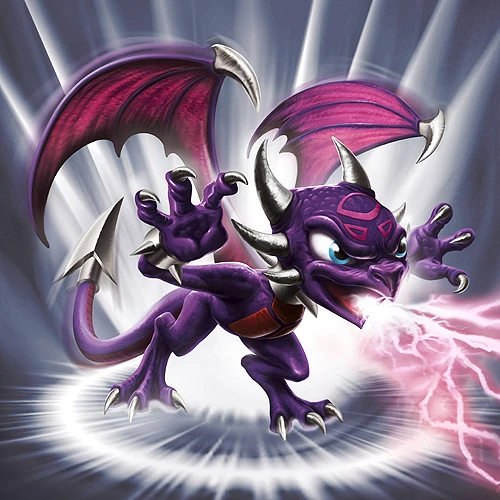
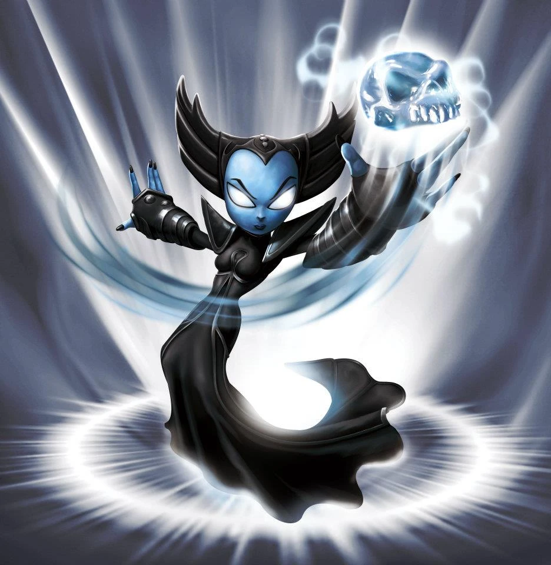
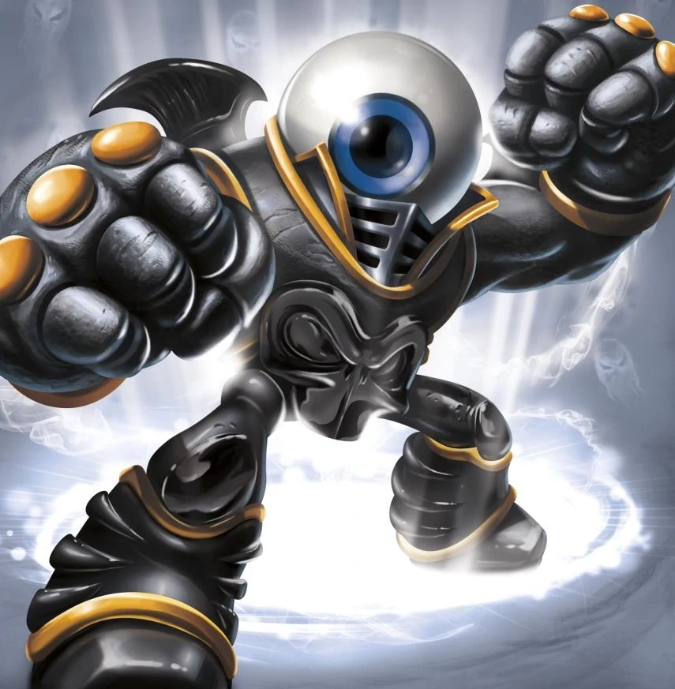
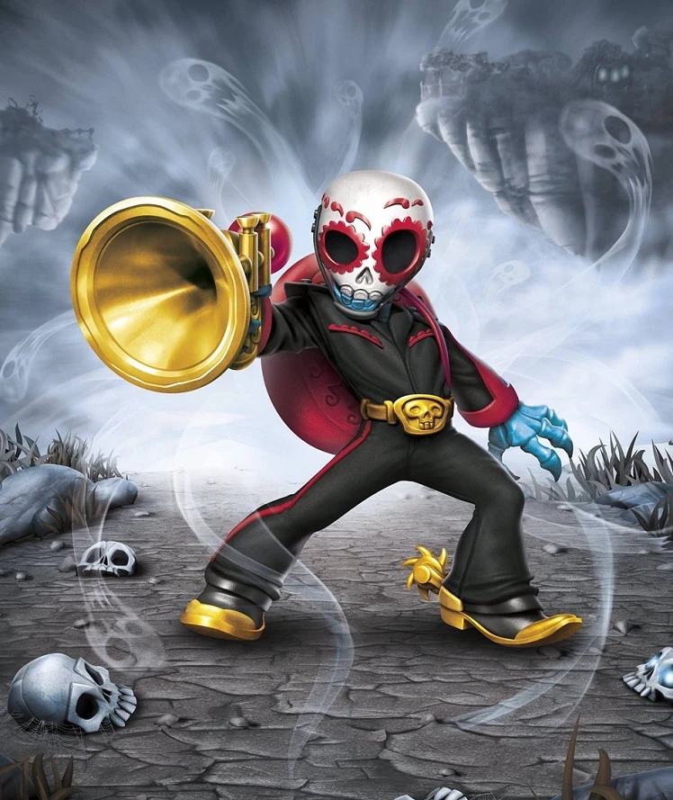
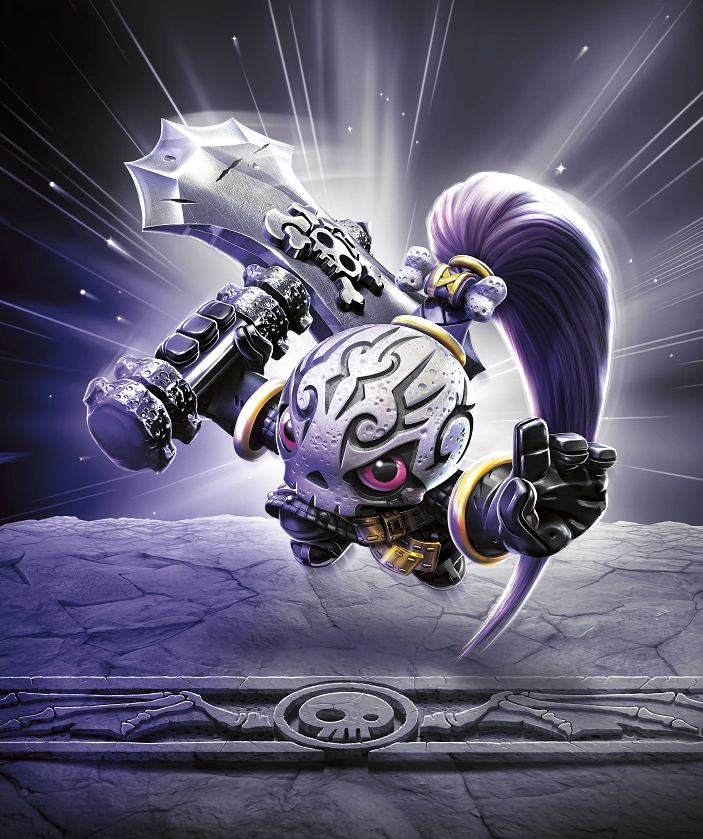
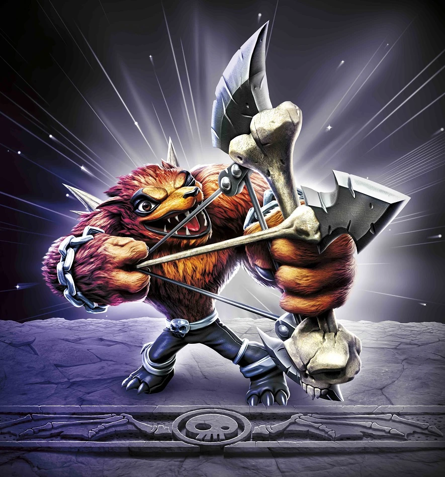

Cynder
While just an egg, Cynder was stolen by the henchmen of an evil dragon named Malefor and raised to do his bidding. For years, she spread fear throughout the land until she was defeated by Spyro the Dragon and freed from the grip of Malefor. But dark powers still flow through her, and despite her desire to make amends for her past, most Skylanders try to keep a safe distance... just in case.

Hex
Long ago, Hex was a gifted and powerful sorceress who traveled deep into the underworld to confront the Undead Dragon King named Malefor, who made several attempts to capture her to learn her secrets. Though she successfully battled the dragon, Hex returned from the underworld changed – having unwillingly joined the ranks of the Undead. Many are wary of her since her transformation, suspecting she has used her powerful magic for evil purposes. But Eon trusts her, and views her as a valuable Skylander ally.
Chop Chop
Chop Chop was once an elite warrior belonging to the ancient race of Arkeyan beings. Like many of the Arkeyans, he was created from a hybrid of elements - in his case, Undead magic and technology. Chop Chop is a relentless, highly-skilled solider who wields a sword and shield made of an indestructible metal. With the Arkeyans having vanished long ago, Chop Chop wandered Skylands for centuries looking for his creators. Eventually, he was found by Eon and recruited as a Skylander.
Ghost Roaster
There was a time when Ghost Roaster was neither a ghost nor a roaster. Instead he was a chef living in a village high in the mountains. One day, while clipping wool from a sheep to use in a recipe, he accidentally fell into the Valley of the Undead and transformed into a ghost-eating ghoul! After eating an entire spectral village, its Ethereal Ruler chained Ghost Roaster to a spiked ball as punishment -- its rattle heard as he wanders the night, warning nearby spirits. When Master Eon eventually heard of his predicament, he figured even a ghost eater could be useful. So he made Ghost Roaster a Skylander... after he promised to eat only evil ghosts.

Eye-Brawl
Throughout history, there have been many epic battles, though none more bizarre than the legendary brawl between the headless giant and the infamous flying eyeball. It all started with a staring contest, but with the headless giant having no eyes and the flying eyeball unable to blink, it soon escalated into an all out war as the two rivals fought fiercely throughout the land of the Undead for over a hundred years! With neither opponent down, the two combatants were eventually struck with the realization that if they were to combine their formidable powers, they would be a force to be reckoned with. By teaming up, the infamous flying eyeball and the headless giant became known as Eye-Brawl, one of the most powerful Skylanders ever known.
Fright Rider
Rider and his magnificent ostrich, Fright, were the finest jousting team in all of Skylands. But after winning the championship for the third straight year, a jealous competitor placed a curse on the elf that sent him to the land of Undead. Not wanting to be without his partner, Fright, who up until this point had been afraid of nearly everything, ate a bag of skele-oats that turned him into a skeleton so that he could brace the journey to the underworld to save his friend. Grateful for being rescued, Fright Rider returned to the surface dedicated to helping others - while still dominating an occasional jousting tournament from time to time.
Rattle Shake
Some say Rattle Shake was the best tracker in the Cloudbreak Islands. Others say he could strike the center of a gold coin at a thousand paces. But the legend of Rattle Shake was immortalized when he found himself trapped by the Black Hat Gang, the infamous group of cowboys who literally were large cows... and evil ones at that. They threatened to plunder the local village unless Rattle Shake led them inside the magical volcano Mt. Cloudbreak, where they hoped to discover enchanted treasure. Badly outnumbered, the ever calm Rattle Shake magically summoned every snake in the area and overtook the notorious bovines in an epic fight. The tale of his heroism was heard by Master Eon, who then recruited him to the Skylanders.
Night Shift
From high up in the gloomy Batcrypt Mountains, Night Shift was a full-fledged baron and heir to a great fortune. But one day, he decided to leave it all behind to pursue his dream as a prizefighter. It wasn’t long before Night Shift became the undefeated phantom-weight champion of Skylands, famous for his massive uppercut and for having once bitten an opponent in the ring. Unfortunately, a rule change made teleportation illegal and Night Shift was forced to give up his belt, officially ending his career as a boxer. Crestfallen over being disqualified from a sport he loved so dearly, his spirits picked up when he was sought out by Master Eon, who told him that his skill as a fighter could be put to great use as a member of the Skylanders.
Roller Brawl
Roller Brawl grew up with five older vampire brothers, who were all very big and overprotective. Being the smallest of her family, she learned how to use her speed and cunning to become one of the toughest jammers in the Undead Roller Derby League. It was during the championship match when she caught the eye of Kaos, who fell head-over-heels in love with her. But when her overprotective brothers stepped in, Kaos had them captured by Drow and taken prisoner. Roller Brawl swore revenge, but even with her impressive skills, she was no match for an entire Drow army. Having developed a strong distaste for evil, she joined up with the Skylanders to fight against Kaos – while never giving up on her search for her brothers.
Grim Creeper
When he was young, Grim Creeper visited the prestigious Grim Acres School for Ghost Wrangling, hoping to attend as a student. But when the Scaremaster interviewed him, he found that Grim didn't have any of the usual training that other students had. Because of this, he was turned away. However, as the young Grim was about to leave, a herd of rampaging ghosts suddenly flooded the school -- carrying away the faculty and leaving the students to fend for themselves. Grim Creeper stood his ground -- not only defending the other students, but using his amazing reaping talents to fight back the ghosts and contain them until help could arrive. Now a Skylander, Grim is considered one of the best reapers ever to swing a scythe, proving that studies alone are no substitute for bravery, passion and true heroic spirit.
Krypt King
The perfect blend of sword and sorcery, Krypt King wandered Skylands for years as the disembodied spirit of a knight – until he found his way into the depths of an ancient Arkeyan weapon vault. Upon finding an enormously powerful suit of armor, the spirit decided to make it his own. Unfortunately, this triggered a long dormant auto defense system. With alarms blaring, a massive sealed chamber was opened, revealing a huge army of war machines. Krypt King launched himself towards the attack force, swinging his newly found giant sword until every machine was utterly destroyed. Realizing the power he wielded could serve a broader purpose, Krypt King sought out the Skylanders and was made a member of the Trap Team, where he now uses his massive Traptanium blade to cut down evil!
Short Cut
Short Cut was renowned for making the finest clothing in all of Skylands. With his magic shears, no thread was too thick, no cloth was too bunchy, and no pattern was too hard to follow. But one day, a fleet of flying sailing ships appeared overhead, crewed by raucous Skeleton Pirates. Having plundered a cargo of golden yarn from fortunetelling soothsayers, their leader demanded that Short Cut stitch together a magic hat that would tell him the futures of everyone in Skylands – or suffer the consequences! Not wanting to see his work used for evil, he bravely snuck onto the ship that night and sewed the pants and shirts of the sleeping pirates together so they were unable to fight. Short Cut then used his magic shears to cut the sails and wrap them around the ship, preventing the pirates from escaping. His brave actions caught the attention of Master Eon, who quickly made Short Cut a member of the Trap Team, where he now uses powerful Traptanium Shears to cut evil’s future short with every snip!
Funny Bone
Funny Bone once lived on Punch Line Island – the funniest place in the Land of the Undead and home of the Eternal Chuckling Trees that magically make everyone laugh when the breeze tickles them. But after hearing stories of this, the evil Count Moneybone sent his minions to investigate if this magic could be used to make a "Funny Bomb" that would render Skylands helpless with laughter. Funny Bone was in the middle of burying his neighbors’ birthday cake on a breezeless day when the invaders arrived. Seeing their large axes, Funny Bone instantly knew that the Chuckling Trees were in danger. Without hesitation, he sprang into action, fighting off the minions and driving them from his humorous home. Now as a Skylander, Funny Bone delivers his own punch line to evil!
Bat Spin
Bat Spin hailed from the underworld, where as a child she was separated from her people. After spending months searching for them, she eventually was welcomed by a colony of magical bats who raised her as one of their own. After many peaceful years living with the bats, the colony was invaded by an army of undead trolls, who were set on stealing their magic to build an ultimate sonar weapon. Bat Spin quickly took action and used powerful abilities that she had learned growing up with the bats and essentially becoming one of them. She heroically defeated the trolls and saved the colony. This caught the attention of Master Eon, who saw at once she would make a worthy Skylander!

Fiesta
Despite being Undead, Fiesta had always been the life of the party. He was once the head member of a popular mariachi band in the personal court of Count Moneybone, who all undead citizens respected immensely. In his spare time, Fiesta and his bandmates played music for all of the new arrivals that entered the Underworld. However, a day came when the new arrivals were actually several Skylanders, who had come on a mission to stop Count Moneybone from unleashing a robot army on all of Skylands. Fiesta then realized that he, like so many others, had been fooled by the evil Count into thinking he was kind and generous – not the vengeful monster he truly was. Unbeknownst to the Skylanders, Fiesta and his bandmates helped to distract the robot army so they could infiltrate Moneybone’s mansion and put a stop to him. Even though the Skylanders were unaware, this act of bravery and defiance did catch the attention of Master Eon, who recruited him at once.
Bone Bash Roller Brawl
Bone Bash Roller Brawl is the Superchargers counterpart of Roller Brawl in Skylanders Superchargers. Her signature vehicle is the Tomb Buggy.

Chopscotch
The only thing that ever mattered to Chopscotch was mastering her weapon of choice, the giant axe, while rocking out to her favorite musical idol, Wolfgang. It never bothered her that she was short in stature or that all of the other ghouls in the Underworld laughed at the way she spoke in rhymes as she made up her own lyrics to Wolfgang’s guitar jams. So when Wolfgang joined the villainous Doom Raiders, she was devastated. But instead of letting it destroy her, she chose to put her axe skills to good use, and fought Wolfgang and his Moon Goons when they attempted to curse her entire town during an evil concert. Her willingness to stand up to her long time hero came as a surprise to everyone, and soon all of the villagers were speaking in rhymes in her honor. Soon after, she met Master Eon, who was so impressed at her fighting abilities and positive outlook that he recruited her as a Sensei for the Smasher Class. Now she teaches new Skylanders how to fight... and how to rhyme!
Pit Boss
Pit Boss was a member of a powerful order of snake philosophers that lived high up in the Great Twisty Mountains. Travelers would come from miles around and make the treacherous climb just to seek out the snakes’ wisdom. Each visitor was permitted to ask one question, but Pit Boss became alarmed when the same question was asked by several different people – how to deal with the growing threat of Kaos! With such a great concern, Pit Boss knew that it was time for action, not words. He left the Order of the Snake in search of this threat, and soon it was clear that Kaos was worse than Pit Boss had imagined. Knowing he could not stop Kaos on his own, Pit Boss joined the Skylanders, and due to his great wisdom and mystical powers, Master Eon enlisted him into the Sensei program as a Sorcerer Master.

Wolfgang
History
Wolfgang wasn’t always a werewolf. He was once a handsome, brilliant musician set to marry a beautiful princess. Before the wedding, he planned to unveil his ultimate symphony to the greatest music aficionados in Skylands, convinced they would love it and instantly hail him as the best composer of all time. But they didn’t. They hated it – and even worse, it actually physically hurt when heard. Turns out Wolfgang had unintentionally discovered the musical note for pain. Being shunned like this drove Wolfgang utterly and completely mad, physically transforming him into the werewolf he is today. With the princess no longer wanting to marry him, he turned to a life of crime, terrorizing the royal subjects and using his evil music as a weapon. The Golden Queen took note of this and realized that Wolfgang could make a powerful ally, if she could control his rage and keep him in line. And that’s a pretty big "if!".
After becoming part of the Doom Raiders, Wolfgang led a group of Moon Goons on an attempt to curse Chopscotch's entire town during an evil concert. They were defeated by Chopscotch, who once looked up to Wolfgang as her favorite musical idol.
Skylanders Trap Team
Wolfgang and his fellow Doom Raiders were freed from Cloudcracker Prison by the evil Portal Master, Kaos, who sought to ally himself with the villains in completing his latest plan to rule Skylands. Like the other Doom Raiders, the red werewolf was doubtful of Kaos's "protection" (as The Gulper was captured by the Skylanders shortly after being freed) and was more willing to follow orders of his leader, the Golden Queen. As more members of the Doom Raiders became captured by the Skylanders, Wolfgang didn't hesitate to express his irritation about the growing issue, even to the point of challenging the authority of the Golden Queen. Eventually, the Doom Raiders overthrew Kaos and obtained his troll butler, Glumshanks.
When a slice of rotten cheese was needed to power the Doom Raiders' Ultimate Weapon, Wolfgang and Dr. Krankcase were assigned to find and capture Kaos, since a Portal Master was needed to travel through time to the era when the cheese would become rotten enough to power their weapon. During Dr. Krankcase's battle with the Skylanders, Wolfgang arrived at the laboratory. Instead of assisting Krankcase against the Skylanders, he snatched up an immobilized Kaos and left with him. At Time Town, Wolfgang began disrupting time with Kaos's powers, but was confronted by the Skylanders before he could take the evil Portal Master to the future with him. Cornered, the werewolf proclaimed that the Golden Queen could have the present period of Skylands, but the future of it was his. Using Kaos's powers, Wolfgang traveled 10,000 years into the future where he successfully conquered Skylands and became its emperor. He created a giant speaker called the Big Bad Woofer, which he used to generate loud sound checks, blowing everything up as a result. If he succeeded in performing his loudest concert, Wolfgang would be able to control the minds of many inhabitants.
With Da Pinchy's help, the Skylanders were able to travel to the future to stop Wolfgang and disrupt his Big Bad Woofer from broadcasting his concert. Wolfgang offered the Skylanders to rule Skylands alongside him as there was no Kaos, Doom Raiders, and pizzas can be delivered in "thirty seconds or less". He immediately dismissed the idea, and declared that both he and the Skylander fight instead. After a musical battle, Wolfgang was defeated and captured, restoring the timeline in the future. Before his defeat however, he was able to send the slice of cheese (which became stinky enough to power the Ultimate Weapon) back to the present for the Golden Queen to use.
After being confiscated, he was brought back to the future by the Skylanders for his Villain Quest with a futuristic descendant of the Mabu, Quigley, named Q.U.I.G.L.E.Y., whose task for him was to capture 100 escaped Lockmaster Imps in a Vacuum Droid. The rehabilitated werewolf was rewarded with Q.U.I.G.L.E.Y.'s thanks, a new outfit, and the Tin Foil Hat.
Skylanders Superchargers
Wolfgang reappears as a playable racer equipped with his own vehicle, the Sub Woofer. When bested in his Boss Pursuit at the Clock Rock, the player will be able to race as Wolfgang.
Skylanders Imaginators
During their rehabilitation, Master Eon gave some of the villains a choice – either go back to a newly reformed Cloudcracker Prison or become Skylander Senseis, teaching a new generation of Imaginators their formidable battle skills as well as how to stay clear of a life of crime. They accepted the deal but first had to prove themselves by re-arranging all the books in the Academy’s library, a task which took almost two years, almost driving Wolfgang mad again. But he got through it and realized he could earn more respect as a Sensei training the Bowslinger Class than he ever could as a musician.